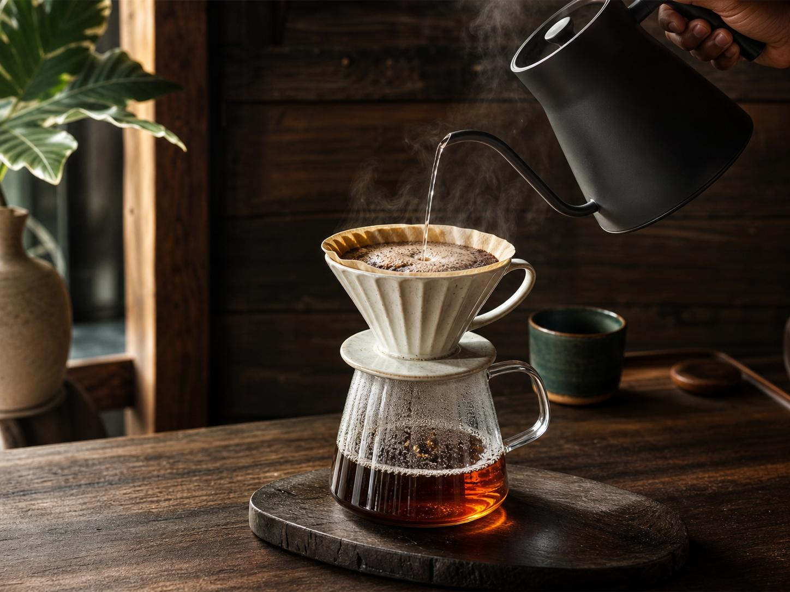

Coffee
豊かな香りと深い味わいで、ほっとひと息。
A LITTLE MOMENT OF HAPPINESS
おいしいコーヒーと、
心温まるひとときを。
CONCEPT
YAMA CAFEは、毎日の暮らしに寄り添う、 落ち着いた雰囲気のカフェです。
丁寧に淹れたコーヒーと、 素材にこだわった自家製スイーツをご用意。
一人でゆっくり過ごしたいときも、 大切な人と会話を楽しみたいときも、 心地よい時間を過ごしていただける空間を目指しています。
ACCESS
MAP